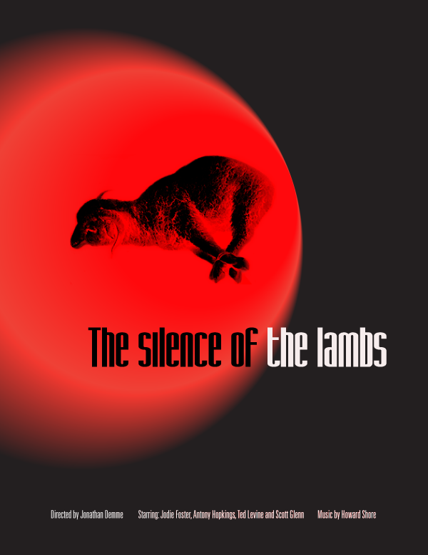
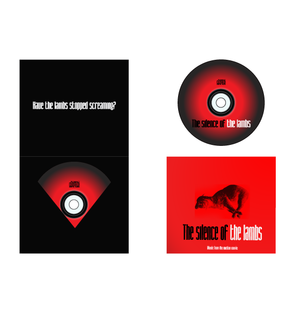

Movie Poster
About this Project:
The objective of this project for Graphic Design was to create two movie posters using layout, imagery, color theory and typography. One of our favorite movies with a CD cover of the soundtrack and a second poster to create a fake movie using the same typeface and core emotional value.
- 
- 